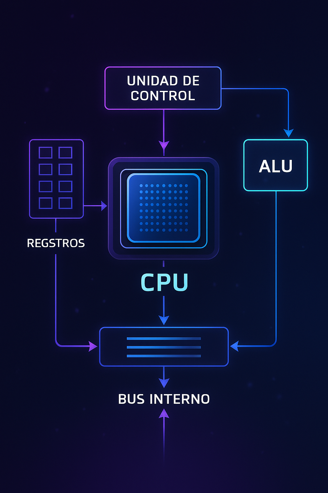

2.1 Organización del procesador
La organización del procesador se refiere a la forma en que se estructuran internamente sus componentes para ejecutar instrucciones eficientemente. Los elementos principales que forman parte de esta organización son:
- Unidad Aritmético-Lógica (ALU): Ejecuta operaciones matemáticas y lógicas.
- Unidad de Control: Interpreta las instrucciones y dirige el flujo de datos entre los componentes.
- Registros: Pequeños espacios de almacenamiento interno para datos temporales e instrucciones.
- Contador de Programa (PC): Lleva la dirección de la siguiente instrucción a ejecutar.
- Bus interno: Permite la interconexión entre los diferentes bloques funcionales.
La organización puede variar entre arquitecturas, pero en general se busca un diseño que permita un alto grado de paralelismo, eficiencia energética y velocidad de procesamiento.
En procesadores modernos también se incluyen unidades de ejecución múltiples, cachés internas, decodificadores de instrucciones y mecanismos de predicción de saltos.
